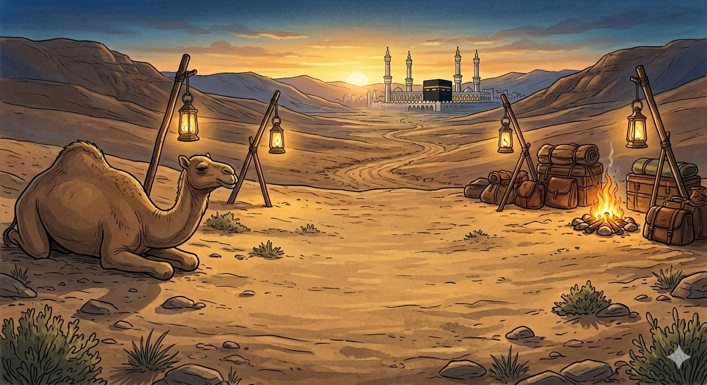

И.А. Дахкильгов. Хьехаме дувцарш - поучительные рассказы-притчи.
И.А. Дахкильгов. Хьехаме дувцарш - поучительные рассказы-притчи. Из ингушского фольклора.

Цунна дика хӀама даь вац со
Ший асхьабашта юкъе Ӏохайна вагӀаш, Мохьмад-пайхамара аьннад, йоах, кхоана, фунехк-даьча наькъагӀа ше Макка ваха воал. Асхьабех цхьанне аьннад: - Цу наькъагӀа ца а водаш, кхыча наькъагӀа вахача дикагӀа дар хьона. - ХӀана ях Ӏа? - аьнна, хаьттад. - Даь ях, ШаӀам яхаш цхьа Ӏарбе циггача хьона кӀийленна хоргва, аьнна цхьанне оалаш сайна хезандаь. - Кхывола моллагӀа цхьа саг сайна кӀийленна ховргва аьлча тешаргвар со. ШаӀам сона ховргва аьлча, тешац со. - ХӀана тешац хьо? - аьнна хаьтад. - Цу оаш вувцача ШаӀама цхьаккха дика хӀама даь вац со, тӀаккха фу бахьан да цун со ве?- аьннад вай пайхамара.
РУССКИЙ
Я ему ничего хорошего не сделал
Сидя среди своих сподвижников, пророк Мухаммед, говорят, сказал, что завтра, по такой-то дороге, он поедет в Мекку. Один из сподвижников предложил ему: - Лучше бы тебе не ехать по этой дороге, а избрать другой путь. - Почему ты так считаешь? - Потому что араб по имени Шаам, как мне стало известно, на том пути устроит тебе засаду с намерением убить тебя. - Я бы поверил, если бы это был кто-то другой, но не верю, что именно Шаам сядет в засаду на меня. - Почему ты в этом уверен? - Да потому, что я этому Шааму ничего хорошего не сделал, так за что же он меня убьет? - ответил пророк.
ENGLISH
I didn't do him any favours
Sitting amongst his companions, the Prophet Muhammad is said to have remarked that tomorrow he would travel to Mecca via a certain road. One of his companions suggested to him: 'You'd be better off not taking that road, but choosing another route instead.' 'Why do you think so?' 'Because, as I have learnt, an Arab named Shaam is going to lie in ambush for you on that road with the intention of killing you.' 'I would believe it if it were someone else, but I do not believe that Shaam, of all people, would lie in ambush for me.' - Why are you so sure of that? - Well, because I've never done anything to this Shaam, so why on earth would he kill me? - replied the Prophet.
НОХЧИЙН
ПОГОВОРКИ
Воча саго яьхад: “Сайна дика даьчоа, цкъа во далцца вахалва со”. Плохой человек говорил: “Дай бог мне еще прожить, пока я не сделаю хоть одну пакость тому, от кого я видел лишь добро”. A bad man said: "God, let me live long enough to do at least one wicked thing to the one who's only ever shown me kindness." Вочу стага баьхна: "Сайна дика динчун, цкъа вон даллалца вехийла со".Дикача къонахчох алар ийшадац, лакхача хена мух ийшабац. На достойного мужчину всегда хулу возводят, высокому дереву всегда достается ветер. A worthy man is always blamed for something, just as the tall tree always catches the wind. Дикачу къонахчун алар эшна дац, лекхачу диттан мох эшна бац.Итт сага дикадар де: хьо кӀалвисача, царех цаӀ мукъа короргва хьона. Сделай десятерым добро: в трудный час хотя бы один из них придет тебе на помощь. Do good to ten people: when you're in trouble, at least one of them will come to your aid. Итт стагана дикадерг де: хьо кIелвисча, царех цхьаъ мукъане карор ву хьуна.Иттанена Ӏа дикадар дича, царех ийссане хьона юха во дарах, дикадар дергдола цаӀ коравоагӀаргва хьона из ийссе во дӀадоаккхаш. Сделай добро десятерым. Если в ответ девять из них сделают тебе зло и лишь один – добро, это одно добро одолеет те девять зол. Do good to ten. Even if nine repay you with evil and only one with good, that single good deed will outweigh those nine evils. Иттанна ахь дикадерг дича, царех иссано хьуна йуха вон дарах, дикадерг дийрадолу цхьаъ карор ву хьуна иза иссе вон дӀадоккхуш.Маьршача сага беттал бийса хоза хет, къу сага хала хет беттала бийса еча. Мирный человек любит ночь лунную, вор – безлунную. A peaceful man loves a moonlit night; a thief prefers one without a moon. Маьршачу стагана беттал буьйса хаза хета, къу стагана хала хета беттал буьйса йеъча.Нахацара гоанмоал езе , юхалург ахча ле. Если хочешь поссориться с людьми, дай им в долг. If you want to quarrel with people, lend them money. Нахаца гамо йезахь, йухалург ахча ло.“Сайна дикадар даь саг вийна воагӀа со”, - яхаш доккхал деш хиннав бӀеха саг. “Я иду, убив сделавшего мне доброе дело”, - хвастался человек черной души. "I'm coming back having killed the one who did me a good turn," boasted the black-hearted man. "Сайна дикадерг дина стаг вийна вогӀу со", - бохуш доккхалла деш хилла боьха стаг.Шайна даь дика довзаргдолчоа мара дикадар ма де. Делай добро лишь тому, кто может его оценить. Do good only for one who will truly appreciate it. Шена дина дика девзардолчун бен дикадерг ма де.Эггар хозагӀа кхеллача хӀамах а во ала корадаьд. Даже о самом прекрасном творении нашли повод сказать плохое. Even the most beautiful creation finds someone to speak ill of it. Уггар хазах кхоьллинчу хӀуманах а вон ала карийна.ЭгӀа дог эттача новкъосто нувра фуъ бийхаб. Захотевший поссориться с другом попросил у него луку седла (т.е. – в долг). One who wanted to fall out with his friend asked to borrow his saddle bow. ИйгӀа дагадеанчу накъосто нуьйран хӀоъ бехна.Юхалург тела хӀама-гаргало теда кӀод да. Отданное в долг – ножницы, режущие родство. Lending something out is like taking scissors to kinship. Йухалург йелла хӀума – гергарло хедош чӀода ду.Юхалург хӀама йийхача, гаргара вар, доттагӀа вар хийра воал. Дай в долг – и друг, и родственник отдалятся от тебя. Lend something out, and both kin and friend grow distant from you. Йухалург хӀума йийхича, гергар верг, доттагӀ верг хийра волу.